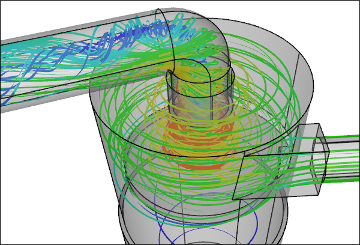
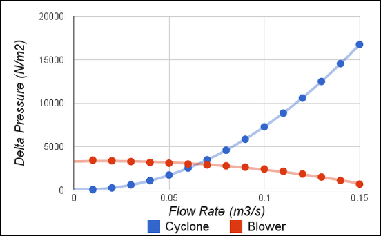

CFD Analysis of a Homemade Cyclone
Hot on the heels of my recent Computational Fluid Dynamics (CFD) analysis of the blower for Matthias Wandel's "Small Dust Collector" comes a new CFD study of his cyclone. Cyclones are used in many industries to separate fluids from particles. In Matthias' case he wanted to separate sawdust and wood shavings from air collected from the working area of various woodworking machines.
CFD Simulation of a Dust Collector CycloneStreamlines
3D Model Construction
Given the relatively simple geometry derived from a standard 5 gallon plastic bucket it was relatively easy to construct the 3D cyclone flow domain from scratch using Matthias' plans.
Dust Collector CycloneSketchUp Assembly Model
The interesting feature of this cyclone is the marginal taper provided by the bucket, rather than the more pronounced conic section found in most cyclones. Also this cyclone uses a specially shaped baffle that acts as a non-return valve for the collected shavings.
CFD Cyclone Flow Volume
Performance Test
While performing a fully coupled fluid and particle CFD simulation is currently beyond the capabilities of Caedium, I can do the next best thing which is to model just the air flow through the cyclone. By running a series of simulations (14 in all) I can determine the pressure drop across the cyclone for a range of volume flow rates. With these results and those of later studies for the remaining components of the dust collector I will be able to determine the overall system pressure drop and see how well the blower matches the system flow requirements.
Cyclone Pressure Drop vs Volume Flow Rate
Zoomed Cyclone Pressure Drop vs Volume Flow Rate
Velocity Ratio (Maximum/Inlet) vs Volume Flow Rate
Summary
The results show that as the flow-rate increases through the cyclone the pressure-drop increases. Further as the flow-rate increases the rate of pressure-drop-increase accelerates (non-linear relationship). The velocity ratio (maximum/inlet) also increases as the flow-rate increases, but at a decreasing rate.
If we just consider the blower and cyclone for moment, i.e., ignore the pressure drops arising from the other dust collector components (e.g., filters), then we can determine the operating conditions of this reduced system by finding the intersection of the cyclone pressure drop curve with the blower fan curve.
Pressure Drop for Cyclone and Pressure Rise for BlowerIntersection represents operating condition
The pressure drop from the cyclone matches the pressure rise from the blower at approximately 3000 N/m2 corresponding to a flow rate of 0.065 m3/s and a blower efficiency of 47%. Recall that the maximum blower efficiency of 49% occurred at a pressure rise of 2720 N/m2 and a flow rate of 0.085 m3/s.
For the complete dust collector we can expect a larger overall pressure drop than that for the cyclone alone and therefore a lower flow rate and lower blower efficiency - how much lower? That's a good question for another blog post, so stay tuned.
Flow Visualization
StreamlinesCyclone CFD simulation for 0.05 m3/s flow rate
Zoomed StreamlinesCyclone CFD simulation for 0.05 m3/s flow rate
Velocity VectorsCyclone CFD simulation for 0.05 m3/s flow rate
Pressure Iso-SurfacesCyclone CFD simulation for 0.05 m3/s flow rate
Clipped Internal Pressure Iso-SurfacesCyclone CFD simulation for 0.05 m3/s flow rate
Clipped Internal Velocity Iso-SurfacesCyclone CFD simulation for 0.05 m3/s flow rate
Clipped Internal Velocity VectorsCyclone CFD simulation for 0.05 m3/s flow rate
Notes
The cyclone geometry was created in Caedium Professional. The CFD simulations were automated using a Python script and were performed using the incompressible, steady-state RANS solver, and the k-omega SST turbulence model.
Feedback
Questions? Ideas? Problems?

Recent blog posts
- CFD Simulates Distant Past
- Background on the Caedium v6.0 Release
- Long-Necked Dinosaurs Succumb To CFD
- CFD Provides Insight Into Mystery Fossils
- Wind Turbine Design According to Insects
- Runners Discover Drafting
- Wind Tunnel and CFD Reveal Best Cycling Tuck
- Active Aerodynamics on the Lamborghini Huracán Performante
- Fluidic Logic
- Stonehenge Vortex Revealed as April Fools' Day Distortion Field
 Get our Blog feed
Get our Blog feed
Comments
EXCELENTE !
EXCELENTE !
Small Dust Collector Analysis
Very interesting and thought-provoking Richard.
I would be interested to see analysis of this DC using a bellmouth outflow tube at several depths should you continue this investigation.
Warm regards,
Don Bomer
intresting and fun.
I wonder how much the pressure drop would change with a spiral diffusor instead of the 90 degree exit elbow. The concept is to recapture some of the momentum in the swirling cyclone. Or even better if the blower inlet is mounted at the cyclone outlet. (motor axis vertical)